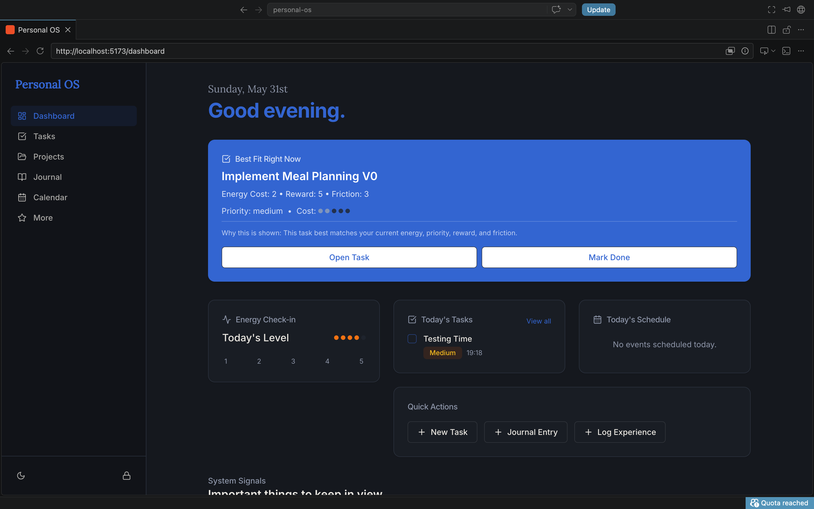
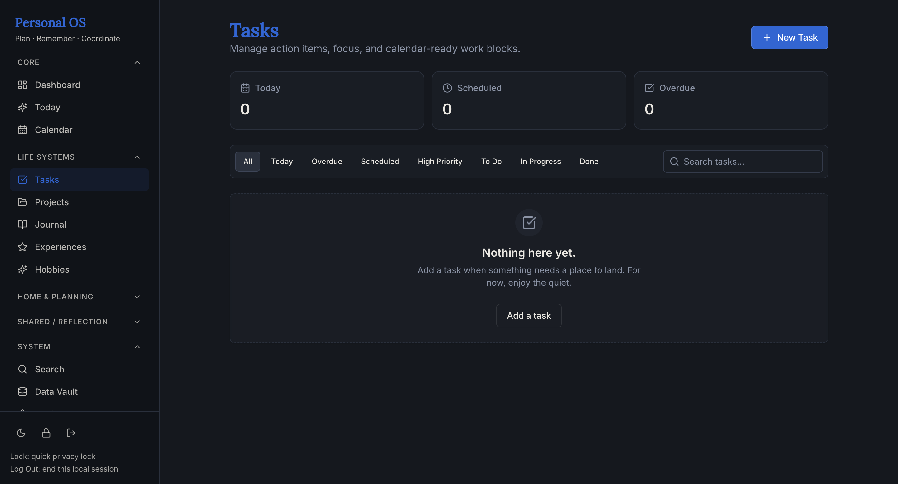
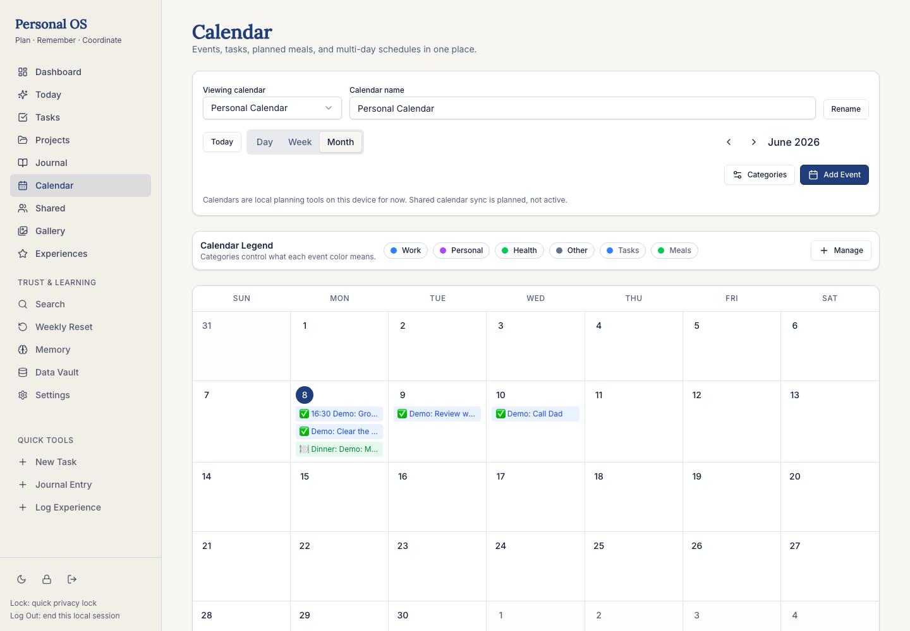
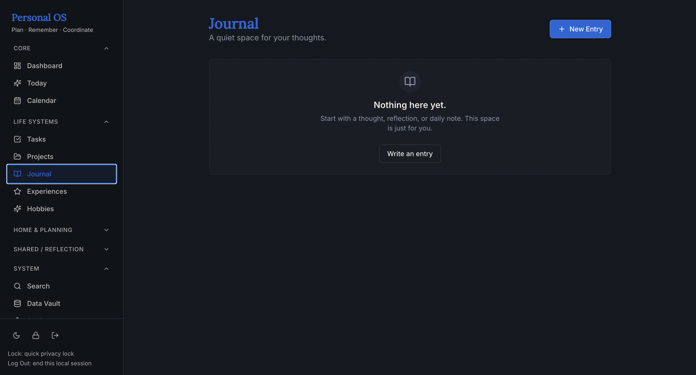
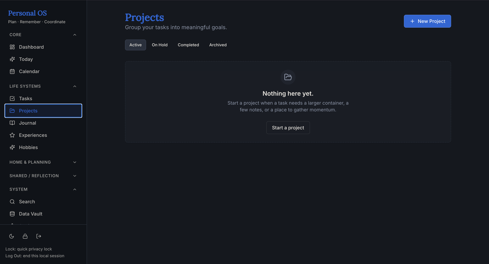
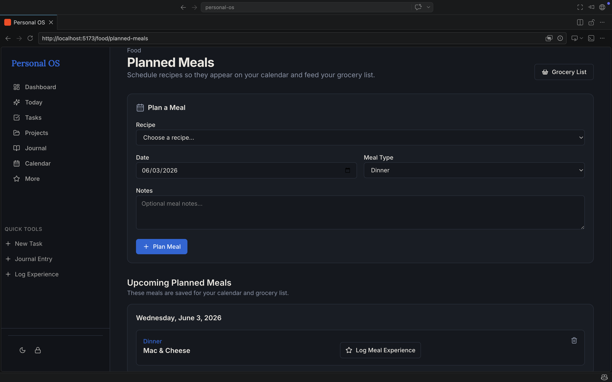
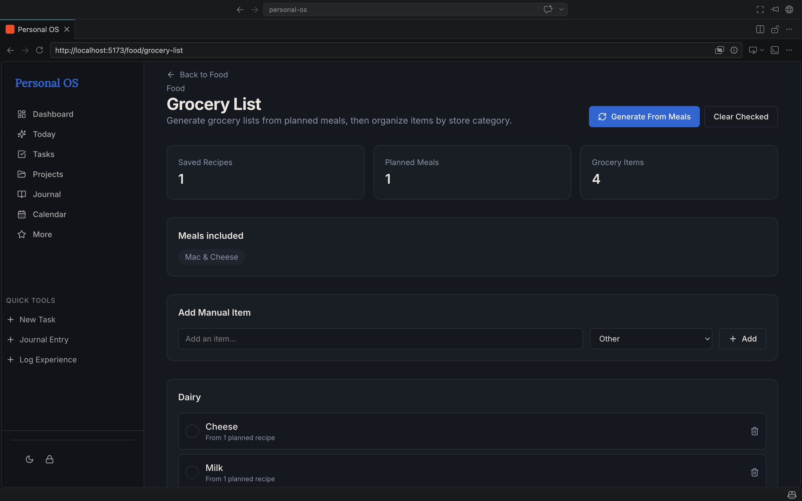
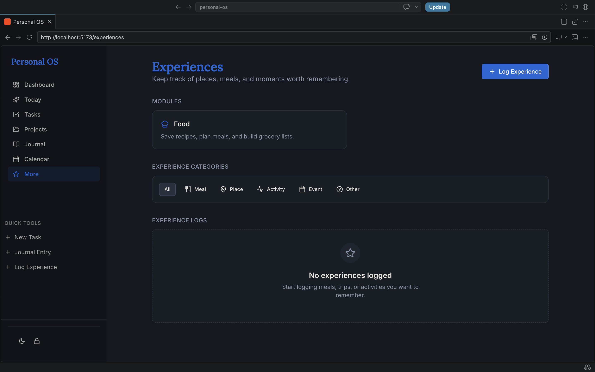

Status
Live portfolio showcase with a public Vercel build available for visitors to explore after reading the case study.
Featured Case Study
A custom productivity system for connecting tasks, projects, calendar events, meals, journaling, daily planning, and system signals.
Personal OS was designed and built as a personal operating system for managing daily life with more context and clarity. The project brings scattered personal systems into one structured dashboard so important work, routines, and signals are easier to understand.
Live portfolio showcase with a public Vercel build available for visitors to explore after reading the case study.
Centralize the systems I use to manage work, projects, routines, meals, journaling, and daily planning.
A connected dashboard that treats personal data as relationships instead of isolated lists, screens, and trackers.

Project Overview
Personal OS is a full-stack personal productivity application designed to centralize the systems I use to manage work, projects, routines, meals, journaling, and daily planning. Instead of treating each feature as separate, the app is built around relationships between information.
Tasks can connect to projects, calendar events surface in daily planning, journal entries can provide context, and system signals help identify what needs attention. The goal is not just to track information, but to help the user understand how different areas of life connect.
Problem
Most productivity tools separate tasks, calendars, notes, food planning, and reflection into different apps. That separation creates friction because the user still has to mentally connect what is due, what is scheduled, what needs attention, and what context matters.
Personal OS was built to explore what happens when those systems are connected in one place. The challenge was creating an interface that could handle complex personal data without becoming overwhelming.
Solution
The solution was to build a modular dashboard and connected set of pages that surface the most important information at the right time. Personal OS includes focus cards, task management, project tracking, calendar views, structured journaling, food planning, system signals, and daily review flows.
Rather than forcing every decision through one large screen, the product groups related information and uses states, filters, and signals to guide attention.
Key Features
A focus card stack gives the user a quick read on what matters today.
Filters, states, priorities, estimated time, and calendar links support practical planning.
Health states, progress, active tasks, and stale project signals keep longer work visible.
Day, week, and month views connect scheduled tasks with calendar events.
Templates and custom fields make reflection easier to organize and revisit.
Meal planning tools bring food decisions into the same daily operating system.
Planning and end-of-day review flows help the system become a daily ritual.
Overdue tasks, upcoming events, and stale projects are surfaced before they disappear.
Visual Showcase
These screens show the current portfolio-ready build. Placeholder cards mark the next screenshot slots so the gallery can expand cleanly as more exports are added.
Dashboard overview with focus cards and system signals.

Task management with filters and dynamic states.

Calendar views connected to scheduled tasks and events.

Structured journaling with templates and custom fields.

Project tracking with health indicators and progress.

Food planning tools connected to daily routines.
Additional Screens

Grocery planning turns meal decisions into practical next actions.

Experience tracking shows how the system can grow beyond task management.
Design and UX Thinking
This project focused heavily on information architecture, interaction design, and reducing friction. The goal was to make a complex system feel approachable by grouping related information, using clear states, and surfacing contextual signals instead of forcing the user to manually search for what matters.
The interface is designed around progressive focus: the dashboard gives a high-level read, detail pages support deeper work, and system signals help translate scattered information into useful next steps.
Technical Highlights
A typed front end supports clearer feature boundaries and safer iteration.
Reusable cards, lists, dashboards, and detail views keep the interface modular.
Pages and detail screens are organized around the product's core workflows.
Tasks, projects, signals, and filters change the interface based on user context.
Dynamic filters help surface overdue tasks, upcoming events, and stale projects.
Tasks and events are displayed with time-aware planning context.
The system is structured so journaling, food, projects, and planning can grow over time.
The product began as a local-first build and now has a public Vercel version for hands-on review.
Try It Live
The live Personal OS build is available as a public showcase. Visitors can open the app, move through the dashboard, and get a hands-on feel for the connected productivity system.
What I Learned
I learned how to think beyond individual features and design around data relationships.
I practiced structuring larger React applications with routing, reusable components, and state-driven UI.
I improved dashboard design, debugging habits, and patterns for making complex systems easier to understand.
Future Improvements
Next Layer
Add an optional database layer, account system, and sync support for multi-device use.
Experience
Improve small-screen workflows and create a stronger first-run experience.
Expansion
Add deeper insights, expanded automation, and continue polishing the public showcase experience.
Personal OS is one of my strongest examples of product thinking, UX design, and full-stack development. It shows how I approach complex problems, design connected systems, and build tools that are practical, personal, and scalable.